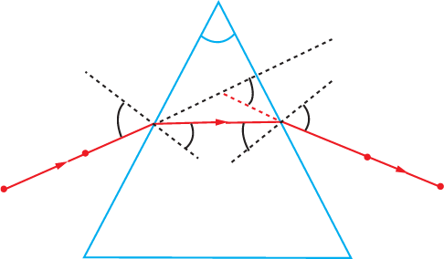

Activity 5.6
Aim:
To trace the path of the rays of light through a triangular glass prism
Materials:
a white sheet of paper, soft board, thumb pins, triangular prism, pencil, protractor, drawing board
Procedure
-
1.
Fix a white sheet of paper on a drawing board using drawing pins.
-
2.
Place the triangular prism resting on its triangular base on the paper. Using a pencil, draw the outline the prism.
-
3.
Draw a line NEN′ perpendicular to the face of the prism AB (Figure 5.12). This is the normal at point E.

Figure 5.12
-
4.
Draw a line PE such that it makes an angle between 30° and 60° with the normal NEN′. This is an incident light ray.
-
5.
On the line PE, fix two pins at a distance of 5 cm from each other and mark these as points P and Q. Replace the prism back on the outline.
-
6.
Look for the images of the pins at P and Q through the AC face of the prism.
-
7.
While looking at pins positioned at P and Q, fix two pins at points R and S such that they appear to be in a straight line with pins at P and Q. Remove the pins and the prism.
-
8.
Let this line meet the prism at point F. Join and produce a line joining points R and SF.
-
9.
Extend the direction of the incident ray PQE till it meets the face AC. Also, extend (backwards) the emergent ray SRF so that these two lines meet at point D.
-
10.
Mark the angle of incidence (i), the angle of refraction (r), the angle of emergence (e) and the angle of deviation (D).
Questions
(a) What happens to the incident ray when it enters the prism?
(b) What factors depend on the angle of deviation through a prism?
The incident ray bends towards the normal when it enters the prism and bends away from the normal when it exits the prism.
Moreover, the angle of deviation decreases with the increase in the angle of incidence.